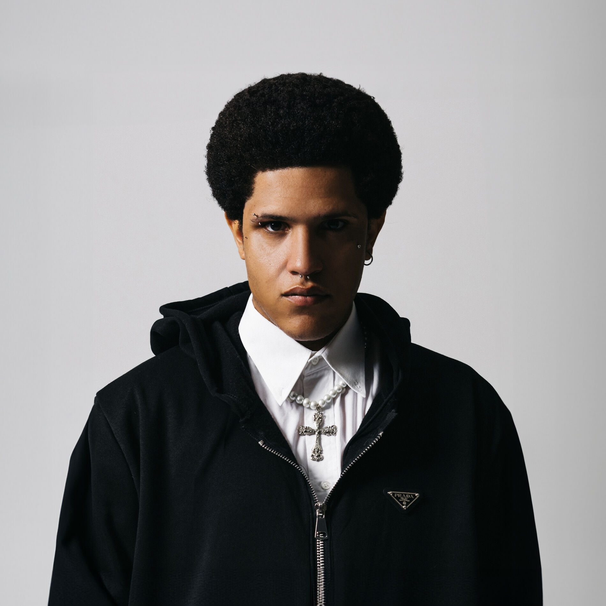
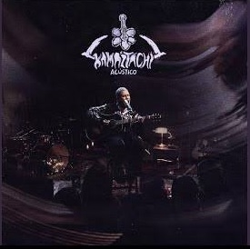

Biografia

Rafael Gonçalves, nascido e criado em Campo Grande na cidade de Rio de Janeiro, conhecido pelo nome artístico Kamaitachi, começou a escrever desde os 12 anos de idade, produzindo pequenos contos baseados em histórias fictícias. Em 2015, iniciou sua carreira musical, inicialmente em uma banda chamada "Sala 31" junto de seus amigos de escola. Em 2017, ingressou em sua carreira solo, mais especificamente em 17 de dezembro, com sua primeira composição nomeada "chuvadesexta.gif". Sua música é uma fusão de vários gêneros, incluindo indie, pop, rock, jazz e blues, refletindo sua versatilidade como artista. Kamaitachi atrai um público que aprecia letras que são tanto ácidas quanto doces.
Kamaitachi teve o auge de sua carreira com o álbum homem torto, esse qual foi formado por músicas com letras peculiares, citando entidades como o próprio que deu nome ao álbum, contando histórias como com a música cabelos arco-íris e 6balas, essa segunda tendo recebido uma continuação em 2023, chamado 6balas (ato II).
Seu nome artístico é uma homenagem ao folclore japonês, onde "Kama" significa cortes e "Itachi" remete a fuinhas, representando a dualidade de seu público. Kamaitachi é conhecido por sua capacidade de conectar-se com os ouvintes através de suas composições ecléticas e letras provocativas, estabelecendo-se como uma figura única e influente na cena musical brasileira.
Álbuns

Outras Músicas do Àlbum:
- "6 Balas"
- "Ave Espurgo"
- "BotasVerdesDeNeon.jpg"
- "Cabelos Arco-íris"
- "Carrinho de Madeira"
- "ChuvaDeSexta.gif"
- "Homem Torto"
- "NoivaCadáver.mp3"
- "ReiDosRatos"
- "Robert Johnson (Sinfonia do Inferno)"
- "SuperHeroina.png"
- "TristeSatan.exe"

Outras Músicas do Àlbum:
- "Festa"
- "Às Cegas do Monte"
- "Carnaval"
- "Clarice" (Ft. Maraia Takai)
- "O Sono de Emily"
- "Chuva de Sábado"
- "O Cravo e a Rosa"
- "Canoa" (Ft. Lagum)
- "Cuida"
- "Sexta"
- "O Conto do Pássaro"

Outras Músicas do Àlbum:
- "Chuva de Sexta - Ao Vivo"
- "6 Balas - Ao Vivo"
- "Regra da Casa - Ao Vivo"
- "Morgana - Ao Vivo"
- "O Limbo do Menino Sem Olhos - Ao Vivo"
- "Robert Jonhson - Ao Vivo"
- "Alice - Ao Vivo"
- "Colorindo Com o Seu Sorriso - Ao Vivo"
- "Lana - Ao Vivo"
- "Carnaval - Ao Vivo"
- "Julieta - Ao Vivo"
- "Perdido em Pensamentos - Ao Vivo"
- "Cabelos Arco-Íris - Ao Vivo"
- "Botas Verdes de Neon - Ao Vivo"
Singles
2018:
- "Café das 6"
- "Moby Dick"
- "Chalé em Alaska"
- "Chamas da vida"
- "Vermelho Vibrante"
2019:
- "Rainha dos Bichos da Floresta"
- "Antes e Depois da Tempestade"
- "Morgana"
- "Lucy"
- "Já, Já Chega Dezembro"
- "BOB"
- "Tsar"
- "Liverpool"
- "Jhonny Boy"
- "Ragnarok"
2020:
- "Future Love"
- "Sabbat"
- "Dragão de Nome Impronunciável"
- Lilith
- Lana
- "Cachecol" (ft. Sanza)
- "Assalto ao Banco"
2021:
- "Gato Cerveja"
- "Godzilla VS Ghidorah"
- "A História de Jhonny"
- "Julieta"
- "A Canção da Viagem"
- "O Psicopata"
- "Bicho Papão"
2022:
- "O Limbo do Menino Sem Olhos"
- "O Treco"
- "Alice"
- "O Sol e a Lua"
- "A Sociedade dos Nerds Psicóticos"
- "As Viagens Inimagináveis de Priska"
2023:
- "6 Balas (Ato II)"
- "Oxóssi"
2024:
- "Sr. Sono"
- "O Fantasma"
- "Miguel em Tempos de Violência"
- "Charlie e o Cacto Cérebro"
- "História Para Caçadores"
2026:
- "Fantasia Sombria"
Participações Especiais
- Anti-Herói (com ZéVitor) em 2023
- Infame (com Supercombo) em 2023
- Olhos De Botões (com VMZ) em 2022
- O Calculista - Ao Vivo Quando A Terra Era Redonda (com Supercombo) em 2022
- Flores Mortas (com Duzz & Rodrigo Zin) em 2021
- 2022 (com Sanza) em 2021
- Fogo (com VENVS) em 2021
- ALQUIMISTA - 70's (com Sos, Sobs, Duzz & Sueth) em 2020
- Sko Ella (com SóCIRO, Duzz, Carla Sol & Knust) em 2020
- João e Maria (com KF, Koda & Yonlerô) em 2020
- Faço Diferente (com EAGLE & Sobral) em 2020
- Mistério (com Knust) em 2020
- AntiHype (com EAGLE) em 2020
- Perfume (com Konai) em 2020
- Bruxa (com ZéVitor) em 2020
- Big Bang (com Ecologyk, NOG, Guhhl & Lou Garcia) em 2019
- FREQUÊNCIA (com Sos & Duzz) em 2019
- Quit Cat - Acústico (com Duzz) em 2019